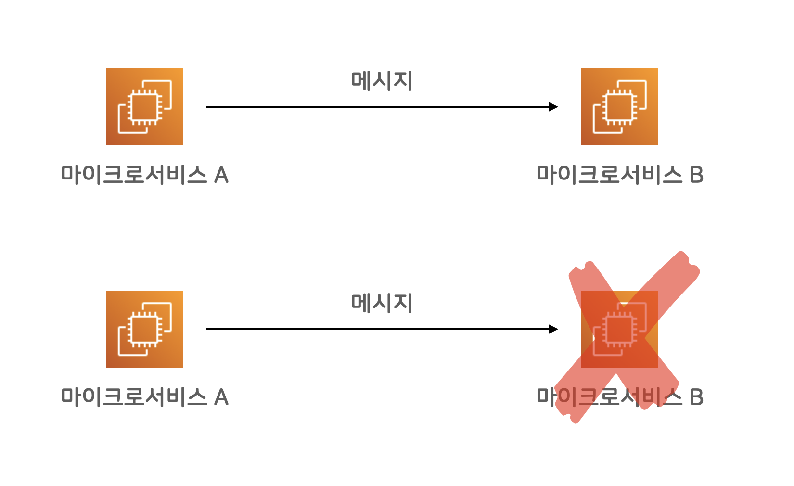

백엔드 엔지니어 김대현
소개
안녕하세요. 백엔드 개발자 김대현입니다! 👋
이제까지, 카카오(다음), NHN, 라인플러스에서 일했고, 현재는 컨스택츠라는 작은 스타트업에서 Haskell이라는 함수형 프로그래밍 언어로 백엔드 시스템을 구축하고 있습니다.
제주도🏝 바닷가에서 한적하게 쉬며 커피☕️ 마시는 것을 좋아합니다.
Medium에 개발 관련한 글을 적기도 하고, YouTube에도 개발 관련 영상을 올리고 있어요.
제 관심 분야를 적으면, 앞으로 공유할 글들에 대한 방향성을 가늠하시기 좋을 것 같습니다.
함수형 프로그래밍
제 관심 분야 중 가장 먼저 꼽고 싶은 것은, 함수형 프로그래밍입니다. 현재 대부분의 주요 프로그래밍 언어는 "명령형 프로그래밍" 스타일입니다만, 함수형 프로그래밍의 장점들이 꽤 녹아들고 있는 것 같습니다.
함수형 프로그래밍 언어 | (1) Clojure
'해커와 화가'라는 책을 읽고, LISP라는 함수형 프로그래밍 언어에 관심을 갖게 되었습니다. 그러다 JVM이 널리 쓰이는 현업 환경에서 쓰기 좋은 클로저(Clojure)를 접하게 되었고, 그 매력적이고 강력한 언어에 빠져들었습니다. 이제껏 배운 언어 중, 리스프 계열 언어들이 가장 우아하다 생각합니다만, 현업 환경의 다수의 개발자들에게 리스프의 모양새는 꽤나 (충격적)이기 때문에, 규모 있는 회사에서 적용해 쓰기에는 부담이 있어 아쉬웠지요.
(defroutes 라우터
(GET "/" [] 핸들러)
(POST "/echo-name" [name]
(str "안녕하세요, " name "님!"))
(GET "/index.html" _
(html [:main
[:section
[:h1 "안녕하세요"]
[:div "클로저 웹서비스 데모"]]]))
(route/not-found "찾을 수 없습니다"))
(clojure + compojure)를 이용해 HTTP 서비스를 구성한 예제입니다. 리스프 계통 언어에 익숙하신 분들에게는 아주 자연스러운 코드일 텐데요, 대부분의 개발자들은, 다른 언어에서보다 많아 보이는 괄호 쌍()으로 인해 거부감을 느끼는 것 같습니다. 익숙해지면, 저 간결한 괄호식들이 참 우아해 보인다는 걸, 믿으실지 모르겠습니다.
함수형 프로그래밍 언어 | (2) Scala
그러다가, LINE 광고개발본부에 입사했는데, 이미 본부 내 몇몇 팀에서 스파크(Spark)를 이용하며 스칼라(Scala) 코드베이스로 개발을 하고 있었습니다. 이에 용기를 얻어, 제가 진행하게 된 신규 프로젝트를 스칼라로 하겠다 보고드렸고, 공식적으로 스칼라 함수형 프로그래밍으로 현업 서비스를 개발해 일본과 대만에 오픈했습니다.
게다가 스칼라로 함수형 프로그래밍을 하려는 개발자 분들이 여럿 저희 팀에 합류해 주셔서, 별다른 외압(?) 없이 스칼라 함수형 프로그래밍을 잘할 수 있게 되어 감사했습니다. 아무리 함수형 프로그래밍이 좋다한들, 충원이 되지 않으면 무슨 소용이 있겠습니까?
trait Semigroup[A] {
def combine(x: A, y: A): A
}
trait Monoid[A] extends Semigroup[A] {
def empty: A
}
implicit val intAdditionMonoid: Monoid[Int] = new Monoid[Int] {
def empty: Int = 0
def combine(x: Int, y: Int): Int = x + y
}
def combineAll[A: Monoid](as: List[A]): A =
as.foldLeft(Monoid[A].empty)(Monoid[A].combine)
combineAll(List(1, 2, 3)) // res3: Int = 6
스칼라 코드의 모양을 소개하기 위해, Cats라는 라이브러리의 Monoid 설명서에 나와있는 예제를 가져와봤습니다. 그래도 스칼라는, 일반적인 명령형 프로그래밍 언어와 겉모습이 비슷하기에, 그리고 스파크라는 프레임워크 덕분에, 업무 환경에 도입해 쓰기에 부담이 적은 것 같습니다.
라인개발실록 인터뷰
당시 저희 팀에서 함수형 프로그래밍을 하고 있단 소식에, 인터뷰까지 진행하게 되었습니다. 진행자 민우님이 잘 이끌어 주셔서 (제게는) 재미있는 영상이 남았습니다. 언젠가 좀 더 본격적으로 함수형 프로그래밍을 소개하는 영상을 남기고 싶네요.
함수형 프로그래밍 언어 | (3) Haskell
클로저와 스칼라는 함수형 프로그래밍 언어로 분류할 수 있습니다. 한편, 함수형 프로그래밍의 끝판에는 "순수" 함수형 프로그래밍 언어인 하스켈(haskell)이 있습니다. 어떻게 제게 이런 행운이 흘러드는지, 하스켈마저도 업무용으로 쓸 수 있게 되었습니다.
2022년 소개를 적는 현재, 컨스택츠라는 스타트업에서 신규 백엔드 시스템을 하스켈로 구축하고 있습니다. 아마도 국내에서 유일하게 하스켈을 실무에 활용하는 회사가 아닐까 합니다. 그래서 저희는, 농담 섞어서, 국내 하스켈 개발자 Top 10 중 3명이 근무 중인 회사라고 허세를 부리고 다닙니다. 국내에 실무 하스켈 개발자가 열 명이 안될 거라는 매우 합리적인 추측 때문에 가능한 농담이죠.
quickSort :: Ord a => [a] -> [a]
quickSort [] = []
quickSort (x:xs) =
quickSort smaller ++ [x] ++ quickSort larger
where
(smaller, larger) = partition (<= x) xs
--- >>> take 11 $ quickSort [1..30000000]
-- [1,2,3,4,5,6,7,8,9,10]
퀵소트 알고리즘을 구현한 하스켈 코드를 가져와봤습니다. 첫줄에 타입 선언이 있고, 이어서, 빈 리스트와 그렇지 않은 리스트에 대한 함수 본문이 나와있습니다. 퀵소트는 주어진 리스트에서 피벗 요소를 기준으로 작은 요소들과 큰 요소들의 리스트로 나눠서 재귀(recursion)로 구현할 수 있는데요, 지금 말로 설명한 부분이, 코드에 그대로 직관적으로 반영되어 멋진 것 같습니다.
하스켈은 엄격한 정적 타입 시스템을 갖춘 순수 함수형 프로그래밍 언어입니다. 순수 함수형 언어는, 함수 내에서 부수효과를 일으킬 수 없기에, 무언가 효과를 일으키기 위해서는 효과자체를 문맥에 담아 표현하고, 그 문맥을 다루기 편하게 하기 위해, 수학적 이론을 바탕으로 한 모나드(Monad)를 적극 활용합니다.
하스켈에 대해서도 차차 소개할 수 있게되기를 기대해봅니다.
사이드 프로젝트
다음으로 꼽을만한 관심 분야는, 때때로 진행하는 사이드 프로젝트입니다. 결과물이 공개적으로 잘 드러나는 프로젝트를 하려고, 프론트엔드 개발도 기웃거릴 때가 있습니다. 아무래도 본업은 백엔드 개발자이기 때문에, 프론트엔드 개발자 분들이 보시기에는, 어설픈 작업물일 가능성이 높습니다만, 그래도 재밌게 개발하고 있습니다. 틈틈히 연습해두니까, 백엔드 개발자로서, 간혹 필요한 웹화면을 만들기에 좋습니다. 구축한 시스템의 웹 관리 페이지를 만들 때도 유용합니다.
프론트엔드 프로그래밍 | (1) Elm
프론트엔드 개발에 좋은, Elm이라는 함수형 프로그래밍 언어가 있습니다. 하스켈과 마찬가지로 순수 함수형 프로그래밍 언어이고, 언어 기능이 간략해서 배우기 쉽고, 웹에 특화돼 있어서, 곧바로 웹 개발을 하기에 좋습니다. 아쉽게도, 쓰는 사람이 많지는 않기 때문에, 학습 자료를 찾아보기에는 아쉬운 점이 많은 것 같습니다.
update : Msg -> Model -> ( Model, Cmd Msg )
update msg model =
case msg of
LinkClicked urlRequest ->
case urlRequest of
Browser.Internal url ->
( model, Nav.pushUrl model.key (Url.toString url) )
Browser.External href ->
( model, Nav.load href )
UrlChanged url ->
( { model | url = url, route = urlToRoute url }, Cmd.none )
UpdateProjectFilter f ->
( { model | projectFilter = f }, Cmd.none )
제 개인 홈에 이용한 Elm코드의 일부를 가져와 보았습니다. 하스켈과 비슷하게 타입 선언을 먼저 두고, 커링도 활용하며, 패턴 매칭으로 메시지를 받아서 처리하는 코드입니다. 저같은 아마츄어가 프론트엔드 개발을 하려할 때, 꽤 든든한 힘을 입어 개발할 수 있어서 좋은데요, 다른 분들의 관심은 적은 언어라는 아쉬움이 있네요. 개인 단독 프로젝트를 진행할 때 이따금 사용할 것 같습니다.
프론트엔드 프로그래밍 | (2) TypeScript
아마도, 제가 프론트엔드 개발을 조금 더 기웃거린다면, 타입스크립트(TypeScript)를 많이 활용할 것 같습니다. 이제 정적 타입 언어가 더 친숙해지기도 했고, 타입스크립트를 활용하는 사람은, 제가 사용하는 마이너 언어들에 비해 대단히 많기 때문에, 많은 분들과 소통하기에는 타입스크립트가 가장 적절하지 않나 생각하고 있습니다.
function reorderFace(from: (n: number) => number): FaceFunc {
return (face: Face) => {
const target = face.slice()
face.forEach((x, n) => target[from(n)] = x)
return target
}
}
const clockwiseF = (x: number) => (7 * x + 6) % 10
const counterclockwiseF = (x: number) => (3 * x + 2) % 10
const halfTurnF = (x: number) => 8 - x
const clockwise = reorderFace(clockwiseF)
const counterclockwise = reorderFace(counterclockwiseF)
const halfTurn = reorderFace(halfTurnF)
최근 작업 중인, 사이드 프로젝트의 코드 일부를 가져와 보았습니다. 자바스크립트(JavaScript)와 거의 같은데, 중간중간 타입을 선언하는 점이 큰 차이점입니다. 제가 쓰는 글에서 코드로 무언가를 설명해야 할 때, 타입스크립트를 주로 써봐야겠다고 생각하고 있습니다.
반갑습니다
이상, 함수형 프로그래밍과 사이드 프로젝트라는 두가지 관심사를 말씀드리면서, 장황한 소개를 적어보았습니다. 글로나마 다른 개발자분들과 서로 좋은 긍정적 힘 주고받으며 지내면 좋겠습니다.언젠가 오프라인에서 만나면 더 반가울 것 같습니다.
2022년 7월 18일 작성
프로 함수형 프로그래머, 괜찮나?
이 글은 직업 함수형 프로그래머로서 느끼고 있는 회의감을 토로한 것으로, 다소 어두운 분위기일 수 있는 점 미리 말씀드립니다. 글 끝자락에라도 빛기운이 들기를 바라봅니다.
프로 개발자
프로 운동선수를 생각하면, 그 기준이 상당히 까다롭겠습니다. 프로 리그에서 현역으로 뛰고 있는 선수여야 한다거나, 아니면 프로 선수 자격증을 취득해야 한다거나 하는 명확하고 높은 기준이 있겠죠.
하지만, 제가 삼고 있는 프로 개발자의 기준은 간단합니다. 개발을 하면서 월급, 그러니까 가계소득을 챙기고 있으면 그게 프로인 거죠. 프로의 마음가짐이나 실력을 따지기 시작하면 너무 모호해지기 쉽잖아요? 어차피 프로 개발자 리그가 있지 않은 이상, 필요 주 소득원이 해당 개발 일로 발생하면 그게 프로 개발자인 겁니다. 그저 월급을 받을 수 있는 직업 개발자이면 되는 거죠. 이 기준에 따르면 실력 좋은 학생이나 예비 개발자도 프로는 아닙니다. 역으로 실력이 없더라도, 월급을 잘 받고 있다면 프로인 거죠. 간단하죠?
프로 함수형 개발자
그런 기준에서 프로 함수형 프로그래머로서 업으로 함수형 프로그래밍을 하는 호사를 누린 지 꽤 됐습니다. 클로저와 스칼라에 이어서 하스켈까지 업무로 활용하는 팔자 좋은 생활을 했습니다.
어떤 분들은 제가 덕업일치를 이루어 살고 있다고 말해주기도 하지만, 결론부터 말하자면, 이 호화로운 사치를 계속하는 게 맞는가 하는 의문이 들기 시작했습니다. (이제야?)
프로 클로저 개발을 했던 회사는 해당 프로젝트를 자바로 전환하는 일을 고심(or 진행) 중이라 합니다. 프로 스칼라 개발을 했던 팀은, 해당 프로젝트를 타 팀으로 이관하지 못해서 유지보수의 책임을 지고 있다 합니다. 하스켈로 일하고 있는 현재 회사는 현재 진행형이지만, 제 개인적으로는 하스켈의 어려운 점을 하나 둘 인정하고 있는 단계입니다.
인프콘 2023 발표 예정
함수형 프로그래밍 언어로 대표 격인 세 가지 언어를, 직업적으로 해본 경험을 주제로, 올해 8월 인프콘 콘퍼런스에서 발표하기로 했습니다. 흔히, 콘퍼런스에서 발표하는 내용은 뭔가를 이렇게 이렇게 잘했다고 공유하는 것이 보통인 것 같은데, 아쉽게도 잘했다고 자랑하기는 어려울 것 같습니다.
그렇다고 실패담이라고 하기는 아쉬우니 경험담 수준에서 최대한 밝게 다뤄보려고 합니다. 재밌는 발표가 될 수 있기를 기대합니다.
스칼라 기초 강의 제작
며칠 전, "자바 개발자를 위한 스칼라"라는 온라인 강의 영상을 만들어서, 인프런에 등록했습니다. 검수과정이 잘 끝나면, 6월 초부터는 구매가 가능할 것 같습니다. 과연 몇 분이나 구매해서 들어주실지 모르겠지만, 아마도 구매수가 많지는 않을 것 같습니다. 강의의 가치 판단은 미뤄보더라도, 일단 "스칼라"에 대한 사람들의 관심이 많지 않을 테니 구매량에 대한 고민을 크게 할 수는 없을 것 같습니다.
수요는 많지 않겠지만, 그래도 관심 있는 주제에 대해 강의를 하나 다 만들 수 있어서 스스로 기특하다 칭찬하고 있습니다. 차차 더 유용한 강의를 만들 수 있는 계단 하나 쌓은 거죠.
다음 강의 주제를 고민하던 중...
강의 제작을 더 진지하게 도전해 보려고 이런저런 고민을 해봤습니다. 첫 강의가 아직 공개되기도 전입니다만, 곧바로 다음 강의를 만들 준비를 시작했습니다.
딱 떠오른 것은 "속성 기반 테스팅"이었고, 이를 주제로 스칼라, 자바, 자바스크립트 등에서 각 언어에서 널리 쓰이는 속성 기반 테스팅 라이브러리를 소개하고 쓰는 법을 공유하는 강의를 만들면 유용하겠다는 생각이 든 거죠.
그런데 잠깐! "속성 기반 테스팅"이라는 주제 자체가 너무 생소하다는 점에서 주춤하게 되었습니다. 사람들에게 관심 있는 주제를 강의로 만들어야, 수익성이 있을 테고, 제게 수익이 중요한 상황이니, 응당 "관심 있는 주제"를 공략해야 하겠습니다. "속성 기반 테스팅"이 수익성이 있을까요? 의외로 수익성이 있을 수도 있겠지만, 아마 기본은 저조한 수준일 겁니다.
내가 하고 싶은 강의가 곧 사람들에게 관심 있는 주제라면 좋겠지만, 그렇지 않다면, 수익성은 크게 고민하지 말고, 자아만족이나 사회공헌의 느낌으로 가져가야 하겠죠. 지금 제가 거창하게 사회공헌을 논할 상황이냐? 아쉽게도 그렇지 못한 것 같습니다. 경제적 독립을 이뤄냈고, 은퇴 비슷한 걸 한 상황이라면 모르겠지만 말입니다.
BETA vs. VHS 교훈
오래전에 비디오테이프라는 매체가 있던 시절에, 소니에서 베타라는 비디오테이프 규격을 내놓았고, 경쟁 규격으로 VHS라는 게 있었다 합니다. (어릴 때 저희 집에 베타 비디오 플레이어가 있었던 것 같지만, 그걸 얘기하면 제 나이가 너무 드러나므로, 일단 은근슬쩍 넘어갑시다)
암튼, 기술적으로는 VHS보다 베타가 여러모로 앞서있었다 합니다. 그런데 여러 기술 외적 이유로 인해, 베타는 시장에서 사라지고, VHS가 비디오테이프 시장을 주름잡게 됩니다. 비디오테이프 매체라는 기준에서, 기술 스펙이 우월한 것만으로는 시장에서 승리하는 데에 충분치 못했던 거죠.
함수형 프로그래밍이 기존 명령형 프로그래밍에 비해, 기술적으로나 학술적으로나 여러모로 우월하다고 봅니다. 이 의견 자체도 논란의 여지가 있을 테지만, 관대하게 봐줘서 사실이라고 쳐도 그 기술적 우월함이, 프로그래밍 패러다임 시장에서 의미 있게 팔리는 것과는 별개일 수 있다는 겁니다.
지금 시장에서 널리 쓰이는 패러다임은 파이썬, 자바, 자바스크립트 등 주류 언어가 자리 잡고 있는 명령형 프로그래밍입니다. 함수형 프로그래밍 패러다임은, 각 주류 언어들 안에서 제한적으로 조금씩 쓰이는 수준이 기본 현실이겠습니다.
함수형 프로그래밍은 BETA의 길을 갈까?
마음으로는 아니라고 믿고 싶지만, 현실적으로는 부인하기 어렵습니다. 하스켈, 클로저 같은 언어들은, 계속 비주류의 길을 가겠죠. 하스켈은 계속 학계에서나 쓰일 것 같고, 클로저는 아주 일부의 팔자 좋은 능력자들만 계속 쓰게 될 것 같습니다. 그마저도 해외에서나 가능할 테고요.
그리고, 한 가지 더 말씀드리자만, 그 커뮤니티 사람들은 소수가 이용하는 현실에 큰 불만이 없습니다. 오히려 너무 초심자들이 많아지면, 그 무게가 너무 무거워지기도 하거든요. 쓸 사람만 쓰는 현실을 받아들이는 것 같습니다.
아무튼, 함수형 프로그래밍 언어들에 있는 좋은 접근들이 다른 주류 언어에 긍정적 영향으로 전파되기야 하겠지만, 그 자체로 주류 언어가 된다? 그런 일은 없을 겁니다. 하스켈이 주류가 된다는 말은, 에스페란토가 만국 공용어가 될 거다라는 주장과 비슷한 수준이지 않을까 합니다.
그래도 BETA처럼 아예 없어지지는 않을 겁니다. 앞으로도 소수의 비주류로 지속되며, 주류 언어에 영향을 끼치며 나아가겠죠.
적자생존
최고의 유전자들이 살아남는 게 아니라, 환경에 적합한 유전자들이 살아남는 거고, 함수형 프로그래밍은 현재 직업 개발자 환경에서 적합하다고 보기는 어렵겠습니다.
분명 탄탄한 프로그램을 짜는 데 우월하지만, 현업 개발환경은 그렇게까지 어렵게 탄탄함을 추구하지는 않습니다. 당장 (누구나) 빠르게 만들어 내는 편리함을 추구하는 게 현업의 환경이죠. 코파일럿이나 GPT 등이 빠르게 안내해 주는 코드를 복붙 하는 시대인 상황에, 힘겹게 코드 정합성을 수식 증명하듯 꼼꼼하게 하고 있는 건 시대착오적인 행동인 것 같기도 합니다.
개인 프로젝트의 영역에서는...
아마도 개인 프로젝트의 영역에서는 계속 스칼라나, Elm 같은 함수형 프로그래밍 언어들을 더 쓸 것 같습니다. 혼자 만들어도 되는 범위에 있어서는 분명 훨씬 나은 점이 도드라진다는 믿음이 있습니다.
하지만, 여러 인원이 모여서 함께 일해야 하는 환경이라면, 함수형 프로그래머를 구하는 것 자체가 어려운 일이므로, 취미나 개인 프로젝트 사이, 좀 더 넓힌다면, 뜻 맞는 몇 명이 소규모로 모여서 작고 탄탄한 프로젝트를 진행할 때는 요긴하고 감사히 쓰기야 하겠죠.
그래서 함수형 프로그래밍 경험을 후회하는가?
아마, 저는 또 비슷한 선택을 할 수 있더라도 비슷한 과정을 거치게 될 것 같습니다. 한편으로는, 그 세 가지 함수형 프로그래밍 언어를 직업적으로 활용할 수 있었던 현실에 감사하고 있습니다. 뭔가 새로운 언어를 배울 때 흔한 걸림돌 중 하나가, "어디 써먹을 일이 없어서 잘 배우기가 어렵다"는 점인데, 전 실용의 영역에서 나름 실전적으로 배울 수 있었던 거죠.
마음 한 편에서는, 그저 취미나 학습, 그리고 기호의 영역에서 순수하게(?) 공부로 접근했으면 어땠을까 하는 생각을 하기도 합니다. 직업 개발은 남들 다 쓰는 주류로 하고 말이죠. 취미로 글을 쓴다거나, 강의를 만든다거나 하는 정도는, 개인 시간에 틈틈이 진행하면 좋을 것 같습니다.
아무리 좋은 기술이라고 해도, 동료들이 쓰지 않는다면, 그 의미가 급격히 줄어드니까 말이죠. 어쩌면 그렇게 좋은 기술이 아닐지도 모르고요.
마무리
그래서, 혹시 함수형 프로그래밍 언어에 관심이 많으신 분들께 응원의 말씀을 남긴다면, "계속 취미나 지적 호기심의 영역에서 학습하는 것"도 충분이 의미가 있다 말씀드려보겠습니다.
스스로도, 계속 공부와 실험의 영역, 개인 프로젝트에서의 실용은 계속해 나아갈 테고요.
스칼라 미니북 공개

함수형 프로그래밍에 관심을 두다, 클로저, 스칼라, 하스켈을 차례로 업무에 활용하고 있습니다. 셋 다 널리 쓰이는 함수형 프로그래밍 언어인데, 셋이 생각보다 많이 다릅니다.
다 매력적이지만, 현대 백엔드 개발에서는 그중 가장 스칼라가 실용적이라는 생각을 하고 있습니다. 하스켈은 too much인 것 같습니다.
스칼라 정도면 함수형 프로그래밍도 꽤 본격적으로 할 수 있으면서, 현업 환경을 떠나지 않고도 실제 활용이 가능하다고 봅니다.
그런 생각에 이어, 기존 자바 개발자들을 대상으로 스칼라를 소개하는 미니 웹북을 만들었어요.
보시는 분들은, 워낙 간단하고 짧아서 쉽게 읽으실 수 있을 텐데요, 저로서는 인생 첫 책이기도 하고, 게으른 성격에 뭔가 길게 가져가다가 마무리한 점에서 꽤 뿌듯합니다.
스칼라에 흥미가 있으시다면, 일독 부탁드리겠습니다.
감사합니다.
온라인 무료 미니북 주소
근로 소득 개발자
출근길에, 은행에서 카톡이 왔습니다. 급여가 입금되었다는 반가운 알림이었습니다. 월급이 매달 입금되는 것이 근로자 입장에서 가장 중요한 일이겠습니다. 중요하고 감사한 일인데, 매달 따박따박 입금되는 것이 당연해지고, 당연해지고 나면 그 밖에도 다른 욕심들이 자라나기 마련입니다.
예를 들면, 나는 회사에서 얼마나 공헌하며, 인정받고 다니고 있는가, 나는 여기서 뭘 배우며 얼마나 성장하고 있나, 내가 원하는 일을 하고 있나, 회사는 나를 필요로 하는가, 또는 나는 어떻게 이 세상을 이롭게 바꾸고 있는가 등등등. 각자의 가치관에 따라 얼마든지 다를 수 있는 다 중요한 가치들이 있겠습니다.
좋은 현상인지 나쁜 현상인지 모르겠습니다만, 오랜 기간 월급을 받다 보니, 그 가치들에 대한 관점이 제 삶에 있어서 중요한 부분으로 최소화되는 것 같습니다. 예를 들어, 배우며 성장하기 같은 주제는, 한창 열 일하는 개발자분들에게는 너무도 중요하고 관심 가는 가치이겠지만, 저 같은 노인네 뒷방 개발자들에게는 거의 관심이 없는 주제입니다. "이제 와서 성장해봐야 얼마나 하겠어", "성장한다 한들 얼마나 더 개발자로 일하겠어" 같은 생각들이 더 강한 것일 수도 있고, 그냥 묵묵히 잘하다 보면 성장하는 거지, 성장을 목표로 용쓴다고 달라질 게 별로 없다는 걸 알기 때문이기도 하겠습니다. 초등학생 어린이들은 빨리 어른이 되고 싶다지만, 막상 어른 된 입장에서야 그 생각이 별로 안 들잖아요? 정작 아무 걱정 없이 신나게 노는 아이들이 부러울 따름입니다. 정작 그 아이들은 나름의 심각한 고민들이 많이 있고요. ㅎㅎ
암튼, 결국 근로소득자 입장에서는, 내 지식 노동을 제공하고, 그 대가를 월급으로 받는 것이 핵심이겠습니다. 욕심을 더 부린다면, 그 지식 노동을 생산하는 과정에서, 월급 외에 다른 부산물들이 나나 회사에 더 발생하면 좋은 거죠. 예를 들면, 내 지식 노동의 품질이 더 올라가서, 잠재적으로 연봉이 오른다거나, 더 높은 급여의 회사로 이직이 쉬워진다거나 하는 등의 부산물요.
뒷방 노인네답게, 오로지 "돈돈돈"을 적게 되었는데, 그렇다고, 월급만으로 기준을 최소화해버리면, 내 장기적인 커리어가 망가진다거나, 과도한 정신적 육체적 스트레스로 건강을 해친다거나 하는 부작용이 발생할 수도 있으니, 나름의 적절한 균형점을 찾아야 하겠습니다. 그 균형점이 정말 중요한 것 같아요. 너무 돈만 따져도 안되고, 그렇다고 너무 이상적인 목표에 대해 과도한 욕심을 부려도, 부작용이 클 테니까요.
이런 마인드가 어떤가 생각해봤습니다. 이러니 저리니 해도 월급날 월급은 잘 들어왔고, 난 그 이상의 추가적인 부가 가치를 나에게나 회사에 만들어 냈으면 정말 잘한 거라고요. 반드시 그래야 하는 것은 아니지만, 그게 가능하다면 바람직한 옵션 정도로 여겨보면, 적어도 일단 마음은 편하지 않나 싶습니다.
어떻게 생각하시나요? 지나치게 소박한 목표일까요? 한편, 뭐 그 모든 욕심이나 이상을 한 방에 날려 보내는 현실은, "왜 내 월급은 왜 텅장을 스쳐가고 늘 부족한가"라는 점이 문제겠습니다. 욕심에 비해 늘 부족하지만, 그래도 입금된 월급에 감사하며 마구 적어봤습니다. 이제 뭐 욕심을 줄여야죠. ㅋ
작성일: 2022년 8월 25일
개발자 직급 체계, 그리고 시니어 개발자란?
나보고 시니어 개발자라고?
한 7년 차쯤 되었을 때, 처음 시니어 개발자라고 불린 것 같습니다. 그때는 "시니어 개발자"라는 호칭 자체가 생소했고, 심지어 조금 불쾌하기까지 했어요. 나이도 들고 경력도 좀 되었는데, 마땅히 공식적인 직함 같은 게 없는 상황에, 애써 우대해 불러주고 싶을 때 쓰는 호칭 정도로 느껴졌습니다.
게다가 제가 생각하는 시니어 개발자는 백발머리 성성한 그런 이미지를 떠올렸는데, 아직 30대 초반 청년(?)이었던 저한테 시니어라니?! 당시 제 주변 동료들은 팀장이 된다거나 승진을 한다거나 하는데, 저만 아직 말단 개발자니까, '뭔가 문제시되는 게 아닌가'하는 자격지심 같은 마음이 발동했나 봅니다. 삐딱하게 말이죠.
이젠 뭘로 보나, 시니어 확정
그런데 요새는 왠지 시니어 개발자의 대우가 꽤 좋은 느낌입니다. 채용 시장에서는 물론이고, 개발자 커뮤니티에서도 "시니어 개발자"라는 부류의 사람들을 인정해주는 분위기랄까요? 이미지 자체가 좋아지니, 시니어라 불리는 것에 대해서 느꼈던 거부감이 호감으로 바뀔 지경입니다.
어쨌건, 이제 누가 저보고 "시니어 개발자"라고 말해도, 저 스스로도 어색하지 않은 상황이 갖춰진 것 같습니다. 백발성성까지는 아니더라도, 흰머리도 많아진 건 확실하고요. 췟!
시니어 개발자의 기준
주변에 "시니어 개발자를 판단하는 기준이 무어냐?"라고 물어보면, 대략 주관적으로는 판단이 가능한 것 같습니다만, 경계를 확실히 가르는 객관적 기준이 있는 것 같지는 않습니다. 각자 생각하는 기준이 다를 수 있기에, 회색 영역이 꽤 넓게 자리 잡는 것 같습니다.
한편, 회사들마다 개발자 공개/비공개 레벨 제도가 있다거나, 아예 직급이나 직함이 그 역할을 대신하는 경우도 있는 것 같습니다. 예를 들어, L1부터 L7까지 있는데, 대략 L4부터 시니어라고 부른다거나 하는 식인 거죠.
아니면, 아예 더 주관적으로, "주변 개발자들에게 일을 시킬 수 있는 영향력이 있으면 시니어"라고 한다거나, 아니면 "본인 밥값을 충분히 하고 주변 개발자도 도와주면 시니어"라고 한다는 의견도 들었습니다.
이 주니어/시니어 개발자라는 기준이, 마치, 청년과 장년의 기준이 무어냐와 비슷한 느낌으로 모호한 것 같다고 생각하고 있습니다.
경험한 회사의 위계들
첫직장 -- 사원, 대리, 과장, 차장, 부장, 임원...
오래전 처음 다녔던 회사에서는 전통적인 직급 제도가 있었습니다. 사원은 그냥 누구누구'씨'라는 호칭으로 불렀고, 대리부터 직급과 '님'자를 붙여서 불렀습니다. 그러니까 저보고는 "김대현씨"라고 불렀는데, 이게 뭐, 한국어 문법적으로 따지자면 존댓말이자만, 사실상 하대죠. 그러다 대리가 되면, 윗사람은 '김대현 대리'라고 부르고, 사원들은 '김대현 대리님'이라고 부릅니다.
동일 직급 내에서는 연봉 차이가 거의 없고, 다음 직급으로 승진을 하면 연봉 인상 폭이 좀 티가 나는 점이 인상적입니다. 사실 이런 회사에서는 주니어/시니어의 구분이 의미가 없고, 그냥 직급 자체가 위계를 드러냅니다.
여기서 직급제는, 거의 호봉에 따라서, 3년 근속하고 나면, 내부 승진 심사를 거쳐, 다음 직급이 되는데, 3년 보다 먼저 되면, 대단히 이례적으로 우수한 경우인 거고, 그보다 늦어지면, 뭔가 안 좋은 평가를 받고 있는 거라, 보통의 경우에는 연차에 맞게 거의 정해진 직급으로 이동했던 것 같습니다.
여기서는, 대략 대리에서 과장될까 말까 한 즈음이 '시니어 개발자'로 부를 수 있는 영역이 아니었을까 돌이켜봅니다.
Daum -- 대표이사도 그냥 '님'일 뿐
Daum은 제 입사 당시 젊은 인터넷 기업으로, 서로 호칭을 누구누구'님'이라고 직급 없이 불렀습니다. 그러니까 당시 이재웅 대표이사님 시절인데, 막 입사한 신입사원도, 대표이사를 부를 때, "재웅님"이라고 부르는 거지요. (뭐, 다행인 점은, 대부분 부를 일이 없습니다). 지금이야 IT 업계에서 님 문화나 영어 호칭 문화가 꽤 일반적인 것 같습니다만, 당시에는 나름 파격이었죠.
호칭 자체는 '님'으로 통일하긴 했는데, 인트라넷 프로필이나, 사내 메신저에서 대화할 때에 이름 옆에 직함을 붙여 표기합니다. 팀장이라거나, 본부장이라거나 유닛장이라거나 하는 식으로요.
그래도 사내에서 온/오프라인으로 서로 부를 때는 '님'자로 끝입니다. 제가 팀장이라고 하더라도, 저희 팀원들은 저를 '대현님'이라고 부릅니다. 타이틀 중에 뭐 '개발리더'라는 요망한 것도 해보았는데, 뭐 별 차이점은 없었습니다.
여담으로, 다음에서 오래 근무를 하다 보니, 보통 회사 명함에 있는 흔한 직급이 없어서, 어색한 경우도 있었습니다. 예를 들면, 친척 어르신들은, "아니 왜 10년이나 다녔는데 아직도 사원이냐? 우리 대현이 승진을 못해서 어떻게 하냐?" 이런 걱정을 해주시는 거죠. "저희 회사는 직급 제도가 없이 다 님으로 부릅니다"라고 말씀드리면, "회사가 무슨 동호회냐? 님으로 부르게?"라고 말씀하시거나, 아니면 '승진 못한 게 민망해서 둘러대나 보다'라고 생각하시는 경우도 있었을 것 같습니다.
사내에서는 님 문화로 충분한데, 대외적으로는 직함이라도 있는 것이 대우가 달라지는 체감이 들기도 합니다. 하다못해 은행 대출을 받을 때에도, 팀장 직함을 하나 달고 있으면, 한도가 더 나오는 식인 거죠.
제가 다니던 시절의 다음에서 개발팀장들은 실무 개발은 거의 하지 않았기 때문에, (팀장 == 시니어 개발자)라고 부르기에는 연결이 좀 어렵기는 합니다. 개발자 출신 시니어인 것은 맞지만, 이제는 개발자라고 부르기 어려운 업무를 주로 했습니다.
다음 카카오 -- 영어 이름을 지으라고?
Daum에서 퇴사할 즈음, 카카오와 합병되었습니다. 실제야 어쨌든, 대외적으로는 다음이 카카오를 인수한 모양새였기 때문에, 회사 이름에도 처음에 "다음"이 붙어있기는 했습니다만, 호칭제도는 본 카카오에서 쓰던 대로 영어 이름을 쓰기로 합니다. 카카오에서는 님 호칭으로는 부족하고, 아예 영어식으로 해야 더 수평적인 문화가 장려된다고 여겼나 봅니다.
지금은 어떤지 모르겠으나, 당시 카카오는, 팀장이나 파트장 등이 실무 개발을 꽤 많이 했다고 들었기 때문에, 여기서부터는 대략 타이틀 있는 사람이 시니어 개발자라고 여기면 될 것 같습니다. 물론, 타이틀 없는 사람 중에서도 시니어 개발자로 부를 만한 사람도 많이 있었겠죠.
NHN -- 호오라, 직급 제도가 있네?
NHN의 경우에는, 의외로 직급 제도가 있었습니다. 사원, 선임, 책임, 수석, 이사 등으로요. 용어의 차이만 있을 뿐, 대략 사원-대리-과장-부장 트리와 비슷한 것 같습니다. 저는 수석으로 근무를 했는데, 이게 거기서는 나름 높은 직급이라 특혜와 대우 같은 게 적잖이 있었습니다.
그래도 NHN은, 경력 연차를 기반으로 하기는 하지만, 능력 평가와 업적 평가를 통해, 연차와 딱 매칭시키지는 않는, 나름 유연한 평가를 했던 점이 인상적이었습니다. 승진 심사위원회 같은 걸 열어서, 추천 대상자의 업적을 여러 상위자가 모여서 평가를 합니다. 심지어 대상자의 최근 몇 년 간 산출 결과 문서와, 사내 깃헙 저장소 소스 코드 커밋 내역까지 다 보고 평가를 합니다.
이 과정은, 경력 많은 상위 직급자들 여럿이 모여 어느 정도 객관성을 부여한 합의를 바탕으로 개발적인 성과와 능력을 평가한 기준이 반영되는 거라, 사내에서 책임부터는 '시니어 개발자'다라고 여겨도 될 것 같습니다.
어찌 보면, 이렇게 팀장 같은 직함보다는 이런 승진 직급체계가, 시니어 개발자를 구분할 수 있는 기준에 가까울 것 같다는 생각을 해봤습니다.
LINE+ -- 다시 복귀한 '님'문화
LINE+도, Daum처럼 님 호칭을 씁니다. 저야, Daum에서 경험했기 때문에 익숙했죠. 팀장은 Lead라고 부르고, 차상위 조직장, 그러니까 2차 조직장도 Lead라고 부르고 있는데요, 아마 네이버도 마찬가지인 것 같습니다. "책임리더"라는 타이틀도 있는데, 아마 꽤 높은 타이틀인가 봅니다. 어쨌건 다음과 마찬가지로, 내부에서 서로 부를 때는 타이틀 빼고, 그냥 님이라고 부릅니다.
입사 당시 나머지는 다 님이라 부르고, 일본에 자주 오가는, 대표이사님만 "신상"이라고 일본식 호칭으로 부르더라고요. 라인 본사는 일본에 있는데, 일본에서, 직급을 빼고 누구누구"씨"라고 부르는 걸 파격적으로 장려한 모양입니다. "-상"이라는 게, 우리로 치면 정확히 "-씨"랑 매칭되는 건데, 사장님을 "-씨"라고 부른 거죠, "신씨"라고. 일본에서는 공식적인 호칭에서는 이름이 아니라, 성을 부릅니다.
암튼, 그러다가, 공개적으로 드러나지 않는, 내부적인 개발자 등급 제도를 만든다던데, 어떻게 진행됐는지는 모르겠습니다. 아마 미국 FAANG 같은 회사에서 한다는 개발자 레벨 제도를 도입하려는 것 같습니다.
도입하려는 레벨 제도는, 레벨마다 역할과 책임, 기대사항과 만족해야 할 기준들이 객관적이고 명확하기에, 레벨에 따라 시니어 개발자의 기준을 매핑할 수 있을 것 같습니다. 저 퇴사할 때까지는 도입되지 않았기 때문에 어떻게 진행됐는지는 잘 모르겠습니다.
근데, 사실 듣기에 개발자 레벨이라는 게, 전통적인 직급 제도와 뭐가 다른지 모르겠어요. 그냥 대리, 선임, 책임 등에게, 구체적인 기대 사항만 능력과 성과 중심으로 적시해도 되는 게 아닌가, 왜 굳이 Level이고 숫자로 해야 하나 하는 꼰대적 의문이 들기는 했습니다.
암튼, 능력과 성과를 객관적으로 평가하려는 시도는 응원하는 마음입니다. 단지 나이나 경력 기간만으로 평가한다거나, 아니면 조직장의 주관적 감을 위주로 평가하는 건 문제가 있다고 봅니다. (요새 어디 그런 조직이 있겠나 싶습니다만...)
그래서, 시니어 개발자의 기준은?
사실 "시니어 개발자"에 대해 명시적으로 합의된 기준이 있지는 않은 것 같습니다.
(1) 경력 기준으로 보자면, 대략 5년 차 넘어가면 주니어라고 부르면 실례가 될 것 같고, 그렇다고 시니어라고 부르기에는 애매할 수 있는 영역인 것 같습니다. 한 7년 차 넘어가면 대충 시니어라고 볼 수 있을 것 같기도 합니다.
(2) 특정 회사에서, 나름의 직급이나 레벨 체계를 경험했다면, 대충 시니어 개발자 기준으로 연결지어도 될 것 같고, 이게 그나마 객관적인 기준이 될 것 같습니다.
(3) 경험한 역할로 보자면, 작은 파트나 팀을 대표로 이끌어 개발을 하는 역할이라면 시니어라고 봐도 될 것 같습니다.
아쉬운 마무리
한참을 고민해봐도 마땅한 결론이 쉽게 나는 것 같지는 않습니다. 사실 어쩌면, 시니어 개발자의 기준이 그렇게까지 중요하지는 않기 때문에, 대충 넘어가도 될 것을, 쓸데없이 많은 고민을 했던 건지도 모르겠습니다.
암튼, 제가 다녔던 회사들의 직급과 호칭 체계는 그랬구나 정도로 참고하시면 재밌지 않을까 합니다.
감사합니다.
작성일: 2022년 7월 22일
마이크로 서비스에 Amazon SQS 메시지 큐 활용하기
Amazon SQS란?
Amazon Simple Queue Service(SQS)는 마이크로 서비스, 분산 시스템 및 서버리스 애플리케이션을 쉽게 분리하고 확장할 수 있도록 지원하는 완전관리형 메시지 대기열 서비스입니다. SQS는 메시지 중심 미들웨어를 관리하고 운영하는 데 따른 복잡성과 오버헤드를 없애고 개발자가 차별화 작업에 집중할 수 있도록 지원합니다. SQS를 사용하면 메시지 손실 위험을 감수하거나 다른 서비스를 가동할 필요 없이 소프트웨어 구성 요소 간에 모든 볼륨의 메시지를 전송, 저장 및 수신할 수 있습니다. AWS 관리 콘솔, 명령줄 인터페이스 또는 원하는 SDK, 3가지 간단한 명령을 사용하여 몇 분 만에 SQS를 시작할 수 있습니다.
공식 홈(https://aws.amazon.com/ko/sqs)에 있는 설명입니다. 말이 조금 어렵게 느껴지지만, 정확하게 적혀 있습니다. 이하, 친절한 설명 덧붙여보겠습니다.
메시지 큐 -- MQ
Amazon SQS는 AWS에서 운영해주는 메시지 큐 서비스입니다. 메시지 큐 서비스(또는 메시지 브로커)는, 소프트웨어 시스템 사이에 메시지를 주고받을 수 있는 믿을만한 우체국 시스템이라고 볼 수 있습니다.
핸드폰 통화 연결과, 카카오톡 메시지 연결의 차이로 비유해봐도 될 것 같습니다. 핸드폰 통화 연결은, 즉각적인 대화를 할 수 있습니다만, 당연히도, 통화 당사자 두 명이 둘 다 깨어있고 대화에 집중해야 합니다. (대화에 집중 안 하는 상대도 많다는 점은 논외로 합시다) 한 명이라도 잠든 상태라면 통화 연결이 되지 않을 테고, 대화 진행이 되지 않겠죠.
카카오톡 메시지의 경우에는, 한 명이 운전 중이거나 하는 이유로 잠시 연결이 되지 않더라도, 메시지를 보낸 사람이 메시지를 보내고 다른 일을 하고 있을 수 있고, 받은 사람은 운전을 다 하고 나서, 메시지를 확인한 다음 응답할 수 있습니다.
마이크로 서비스 사이에 메시지 전달을 이어주는 카카오톡이 메시지 큐라고 보면 이해하기 쉬울 것 같습니다. 메시지 큐는 일반적으로 장애에 대한 내성이 (대단히) 높고, 메시지를 안전하게 저장해서 유실되지 않게 보장해 주곤 합니다. 일단 성공적으로 메시지를 큐에 넣었다면, (거의) 반드시 수신자에게 전달된다고 믿을 수 있습니다.
마이크로 서비스끼리 직접 통신

백엔드 마이크로 서비스 A와 B가 통신을 해야 하는 상황에, 보통의 네트워크 통신을 한다면, 즉각적으로 결과를 확인해가며 동기식(synchronous)으로 통신할 수 있습니다만, 대신 A나 B 둘 중 하나만 문제 상황을 만나더라도 전체 시스템이 실패하는 문제가 있습니다.
위 그림에서 보자면, 서비스 B에 장애가 발생하면, 해당 메시지를 주고받아야 했던 상황 전체가, 시스템 차원에서 실패한 꼴이 됩니다. 서비스 A는 문제없이 정상이었는데도 말이죠. A 입장에서는 억울한 상황입니다.
메시지 큐를 활용한 간접 통신

마이크로 서비스 사이 중간에 메시지 큐 서비스를 활용해 통신하면, 메시지 송수신 채널을 유연하게 연결할 수 있습니다. 중간에 메시지 브로커가 안전하고 유연한 버퍼 역할을 해주어서, 메시지를 발송하는 쪽에서는 메시지 수신부가 정상적인지 아닌지 큰 걱정 없이 메시지를 보내고 다른 일을 할 수 있습니다.
마이크로 서비스 B에서 일시적인 문제가 발생했다고 하더라도, 마이크로 서비스 A에서는 정상적으로 메시지를 브로커에 보낼 수 있고, B입장에서는, 다시 정상 작동하는 시점에 메시지를 가져올 수 있습니다. 잠깐의 장애 상황에 대해서 대응할 수 있는 여력이 생긴 거죠.
참고로, 메시지 브로커 서비스는, 다중화 구성을 기본으로 장애 걱정 없이 믿을 만한 시스템으로 구축합니다. 브로커 시스템 일부에 장애가 발생하더라도, 브로커 시스템 전체로 보자면 정상 작동하도록 믿을 수 있는 높은 신뢰도를 바탕으로 운영됩니다. 각자 갖고 있는 스마트폰이 물에 빠지거나 문제가 생길지언정, 카카오톡 서버가 메시지를 유실했다고 생각하기 쉽지 않은 것처럼요.
메시지를 보내는 쪽을 프로듀서(producer)라고 부르고, 받아서 사용하는 쪽을 컨슈머(consumer)라고 부릅니다.
Amazon SQS

메시지 큐 시스템을 자체 인프라에 운영하던 시절에는 오픈 소스 프로젝트로 RabbitMQ가 널리 활용됐었는데요, 클라우드 환경으로 넘어가고, 게다가 AWS에서 책임지고 운영해주는 SQS 같은 브로커 시스템이 등장하면서, 훨씬 더 편리해진 것 같습니다. AWS에서 책임지고 믿을만하게 운영해주기 때문에, 우리는 브로커 운영 부담은 전혀 없이, 각자 개발하는 시스템에서 메시지만 보내고 받아도 되게 된 거죠.

SQS 시스템은 확장성이 매우 뛰어난 브로커 역할을 합니다. 예를 들어, 고객의 요청을 받은 ELB 로드밸런서가, 웹 서비스들로 부하를 분산시켜주고, 각각의 웹 서비스 인스턴스들이 각자 맘 편히 SQS 큐에 메시지를 쌓고, 뒷 단에서 메시지를 처리하는 마이크로 서비스가 묵묵히 자기 일을 하는 식으로 시스템을 구성 할 수 있습니다. DB값을 바꾸는 일처럼, 당장 즉각적인 처리를 반드시 해야 하는 일만 앞단에서 처리하고, 이어서 관련한 시간이 오래 걸리는 일들을 분리해서, 큐 뒷단에서 처리할 수 있겠습니다.
Amazon SQS의 상세 특징
SQS가 메시지 브로커 시스템을 본격 활용하기에 앞서, 구체적인 특징들을 미리 살펴보겠습니다.
기본 특징
- 각 메시지는 최대 256KB 크기입니다. S3에 메시지 본문을 담는 방식을 추가로 지원하기 때문에, 제한 없이 쓸 수도 있습니다.
- 큐에 저장되는 메시지 건 수의 제한은 없습니다.
- 다만 각각의 메시지는 최대 14일간 유지됩니다. 14일 이내에 메시지를 처리(consume) 해야 합니다.
두 가지 큐 종류 -- 표준대기열 vs. FIFO 대기열
보통의 메시지 큐 시스템은, 기본적으로 최소 한번 전송(at least once delivery)을 약속합니다. 혹시 문제가 생기더라도, 최소한 한 번 이상 메시지를 전송해준다는 약속인데요, 그 말은, 같은 메시지가 두 번 이상 수신될 수도 있다는 뜻입니다. 여러 번 수신될 수도 있긴 해도, 어쨌건 유실되지는 않는다는 약속을 지킵니다. 표준대기열은, 이 "최소 한번 전송" 약속을 해주는 큐 시스템이고, FIFO 대기열을 선택하면, 정확히 한번(exactly once) 전송을 약속해 줍니다. 최소 한번 전송 방식에서, 중복 여부를 브로커가 확인해줘서 두 번째 중복 메시지부터는 버려주는 시스템인 셈입니다.
- At least once -- 최소 한 번 이상 메시지 전송을 약속
- Exactly once -- 정확히 딱 한 번 메시지 전송되는 것을 약속 (중복 메시지 제거해줌)
언뜻 보면, 고민할 필요 없이 FIFO 대기열이 좋은 것 같습니다만, 세상에 공짜는 없겠죠? FIFO 대기열 시스템은, 표준 대기열 시스템에 비해서 확장성이 떨어지고, 비용이 약간 비쌉니다. 둘 다 아주 저렴한 수준이어서 비용은 문제가 되지 않을 것 같습니다만, 확장성에 문제가 드러날 수도 있겠습니다.
표준 대기열 시스템은, 사실상 무한대의 처리량을 지원하고, FIFO 시스템은 초당 최대 300건의 메시지 API를 처리할 수 있습니다. 한 번의 API에 최대 10개 메시지를 한 번에 배치 처리할 수 있기 때문에, 매초 최대 3천 건 메시지를 처리할 수 있는 제한이 있는 셈입니다. 꽤 높은 처리량이기 때문에, 대부분의 소규모 시스템에서는 충분하겠습니다만, 규모가 커진다면, 이 제한이 문제가 될 수도 있겠습니다. 그리고, FIFO 시스템은, 메시지 전달 순서도 보장됩니다. 먼저 보낸 메시지가 먼저 수신됩니다. 물론, 수신부(consumer)가 하나여야 의미 있는 얘기가 되겠지만 말이죠.
기능 표준대기열 FIFO 대기열
메시지 보장 최소 한번 (중복 수신 가능) 정확히 한번 처리량 사실상 무제한 최대 3,000메시지/초 비용 약 $0.4/백만건 약 $0.5/백만건 순서보장 순서가 바뀔 수 있다 먼저 송신한 메시지가 먼저 수신된다
메시지 생명주기 -- lifecycle
- 메시지 송신부(producer)가 SQS에 메시지 A를 보냅니다.
- SQS는 메시지A를 사본을 만들어 여러 곳에 안전하게 보관합니다. (유실 방지)
- 수신부(consumer)가 SQS에서 메시지 A를 처리하고자 가져갑니다. (inflight 상태)
- SQS입장에서 수신부가 메시지A를 가져갔기 때문에, 큐에 메시지가 남아있기는 하지만, 다른 컨슈머가 메시지 A를 (또) 가져가지 않도록 일정시간동안(visibility timeout) 수신요청에 드러나지 않습니다.
- 수신부(consumer)가 메시지를 정상 처리 완료했다면, 직접 SQS에 메시지A를 삭제하도록 요청합니다. (완료)
- 만약 어떤 이유로 수신부(consumer)가 메시지를 삭제하지 않는다면, 일정 시간이 지나면, 메시지 A가 다시 수신 요청에 드러납니다. (재처리 가능)
- visibility timeout -- 기본 30초. 0초에서 12시간 사이 설정 가능. 기본은 큐에 설정. 메시지 개별 설정도 가능.
SQS Java 예제
AWS SDK 예제 깃헙에, SQS 관련 예제도 잘 나와있습니다. 그중 일부 예제를 가져와 정리했습니다.
https://github.com/awsdocs/aws-doc-sdk-examples/tree/main/javav2/example_code/sqs
Gradle 의존성 설정
dependencies {
// ...다른 의존성 설정...
implementation platform('software.amazon.awssdk:bom:2.15.0')
implementation 'software.amazon.awssdk:sqs'
}
AWS Java SDK 중, SQS 의존성을 추가합니다.
기본 import
import software.amazon.awssdk.auth.credentials.ProfileCredentialsProvider;
import software.amazon.awssdk.regions.Region;
import software.amazon.awssdk.services.sqs.SqsClient;
import software.amazon.awssdk.services.sqs.model.*;
SQS 클라이언트 준비
SqsClient buildClient() {
return SqsClient.builder()
.region(Region.AP_NORTHEAST_2)
.credentialsProvider(ProfileCredentialsProvider.create())
.build();
}
사용하고자 하는 리전을 지정하고, 적절한 자격증명 설정 방식을 선택합니다.
큐 URL 얻기
String getQueueUrl(SqsClient sqsClient, String queueName) {
try {
GetQueueUrlResponse getQueueUrlResponse =
sqsClient.getQueueUrl(GetQueueUrlRequest.builder().queueName(queueName).build());
String queueUrl = getQueueUrlResponse.queueUrl();
return queueUrl;
} catch (SqsException e) {
System.err.println(e.awsErrorDetails().errorMessage());
System.exit(1);
}
return "";
}
AWS 콘솔이나, 별도 작업으로 만들어 둔 SQS 큐 이름을 기준으로, 큐 접근 URL을 구합니다.
큐에 메시지 보내기
void sendMessage(SqsClient sqsClient, String queueUrl, String message) {
sqsClient.sendMessage(SendMessageRequest.builder()
.queueUrl(queueUrl)
.messageBody(message)
.build());
}
메시지 송신 요청 객체를 만들어서, 큐 URL에 전송하는 코드입니다.
메시지 송신 -- produce
void produce() {
SqsClient sqsClient = buildClient();
String queueUrl = getQueueUrl(sqsClient, "testQueue");
sendMessage(sqsClient, queueUrl, "Hello World!");
sqsClient.close();
}
기본 흐름은, SQS클라이언트를 생성하고, 큐 URL을 구한 뒤, 메시지를 보내고, 클라이언트를 닫으면 됩니다.
메시지 수신 -- consume
void consume(SqsClient sqsClient, String queueUrl) {
ReceiveMessageRequest receiveRequest = ReceiveMessageRequest.builder()
.queueUrl(queueUrl)
.waitTimeSeconds(20)
.build();
ReceiveMessageResponse response = sqsClient.receiveMessage(receiveRequest);
List<Message> messages = response.messages();
messages.forEach(m -> System.out.println(m.body()) );
}
메시지 수신(consume)도 비슷합니다만, 여기서는, 최대 폴링(polling)시간으로 20초를 설정했습니다. 메시지 수신할 때, 한 번에 최대 10건의 메시지가 수신될 수 있기 때문에, List<Message> 타입으로 조회했고, 각각의 메시지들에 대해서, 하고 싶은 처리를 한 다음, SQS 큐에서 삭제(delete) 처리를 하도록 합니다.
다른 서비스 참고
Amazon SQS는, produce-consume 방식의 메시지 송수신에 활용할 수 있고, Amazon SNS는 Pub/Sub 방식에 활용할 수 있습니다. Amazon Kinesis의 경우에는 스크리밍 방식으로 메시지를 송수신할 수 있습니다. 그리고, Apache Kafka의 경우에도 AWS에서 관리형 서비스로 제공하고 있으니, 서비스 요구 사항에 따라서 적절한 서비스를 골라 쓰면 되겠습니다.
대부분의 경우에는, SQS와 SNS를 적절히 조립해서 활용하는 형태로 구성할 것 같습니다. 카프카나 키네시스까지 활용할 일은 흔치 않을 것 같습니다.
이상, Amazon SQS 시스템에 대해 알아보았습니다.
참고자료
- Amazon SQS -- https://aws.amazon.com/ko/sqs/
- Amzons SQS JAVA 예제 -- https://github.com/awsdocs/aws-doc-sdk-examples/tree/main/javav2/example_code/sqs
- SQS, SNS 설명 영상 -- https://youtu.be/UesxWuZMZqI
- SQS, SNS, Lambda 설명 영상 -- https://youtu.be/8zysQqxgj0I
date: 2022년 8월 1일